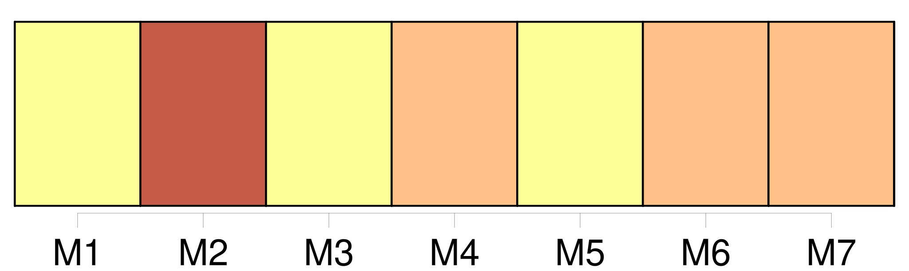
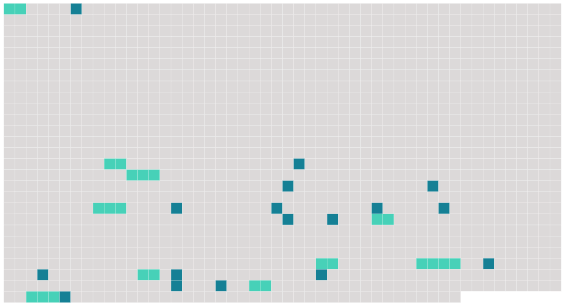

Longueur nb maillons : 27 mentions |
  |
[La servante] , chargée de veiller [son] quart de nuit, se remit à ronfler, le corps plié sur un banc et la face appuyée sur la table. [26 phrases]
À cette exclamation, [la servante] s'éveilla brusquement, et, se tournant vers elle, lui demanda si elle [l'] avait appelée. [3 phrases]
dit [la servante ébahie] ; quels noms? [6 phrases]
— Madame, répondit la servante, [je] n'y avais jamais fait attention, et, d'ailleurs, [je] ne sais pas lire. [7 phrases]
[La servante épouvantée] la crut folle et [voulut] s'enfuir ; mais la jeune femme, [l'] arrêtant : par grâce, [restez] , dit -elle, et [parlez] -moi!! [3 phrases] — Mais, madame, vous ne rêvez pas, ni [moi] non plus, [je] pense, répondit [la servante] [16 phrases] Dites -moi, [ma chère] , ajouta-t -elle en s'adressant à [la fille d'auberge] , connaissez [-vous] dans cette ville mademoiselle Pauline D ……
? — Mais [allez] me chercher une autre servante, quelqu'un?? [4 phrases]
Allez, allez, informez [-vous] de cela ; [courez] donc? [La servante] objecta que toutes les servantes étaient couchées, que le garçon d'écurie et les postillons ne connaissaient au monde que leurs chevaux. Une prompte libéralité de [la jeune dame] [la] décida à aller réveiller le chef, et, après un quart d'heure d'attente, qui parut mortellement long à notre voyageuse, on vint enfin lui apprendre que mademoiselle Pauline D …… |
 |
La ressource peut être téléchargée sur la page Ortolang
Si vous avez des questions ou vous voyez des erreurs, merci d'envoyer un mail à silvia.federzoni89@gmail.com
Site développé par S. Federzoni (contact)